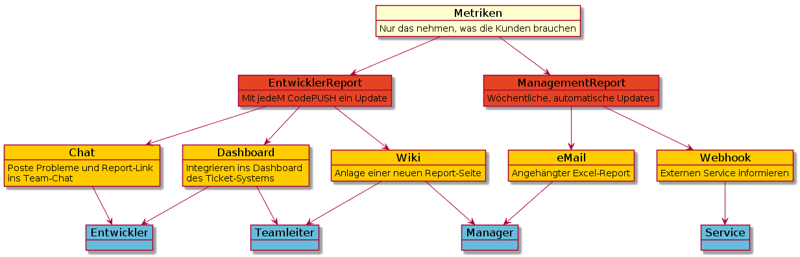

datablocks overview¶
What is datablocks
Created by the useblocks teamA rough overview about its functions
How a metric becomes a Business Indicator
Our datablocks vision
- What is good? What is bad?
- Which Team is in the lead?
- For what is it good for?
- Who is interested in this?
datablocks BI Extensions

metric service landscape
| Collectors | Storages | Dashboards | Suites |
|---|---|---|---|
| logstash | influxdb | kibana | Prometheus |
| TCollector | opentsdb | grafana | Jasper |
| Heka | Graphite | Graphite-Web | Pentaho |
| Zato | KairosDB | Dashing | |
| fluentd | SciDB | ||
| Scrapy | graylog | ||
| Nutch |
And do not forget: IBM, SAP, Oracle, Microsoft, Qlik, ...
datablocks Service Integration
datablocks integrates in existing service landscapes and extends them with special functions.

And it provides an overall Web User Interface for all services.
Without disabling direct access to their specific Interfaces (Browser, APIs, ...)
Current meaning of Reporting
E-Mail me!

datablocks Report Distribution

datablocks USP
We have three...datablocks BI Extensions
datablocks Service Integrations
datablocks Report Distribution